本页为原始SVG，包含17个图表和3张主页卡片。保留设计稿原始数字与文字；原稿存在的单位或占位疑点未被改写。文字SVG依赖本机字体，逐段字体记录随附；这不是重新设计的页面，也不代表所有图表已具备动态数据绑定。
来源清单与状态
6695:314803 · 343 × 273
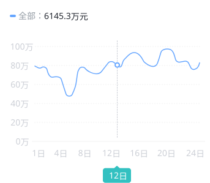
原始SVG · 转曲原件 · 字体与参数 · SVG原始几何
6695:314937 · 343 × 305
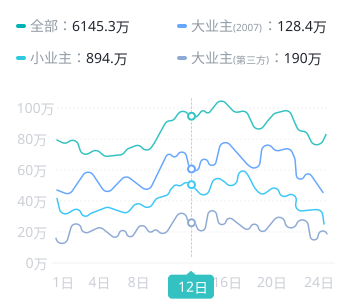
6695:315115 · 343 × 238
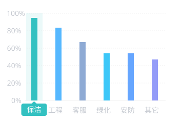
6695:315240 · 343 × 303
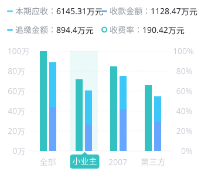
6695:315326 · 343 × 329
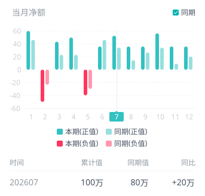
6695:315631 · 343 × 1018
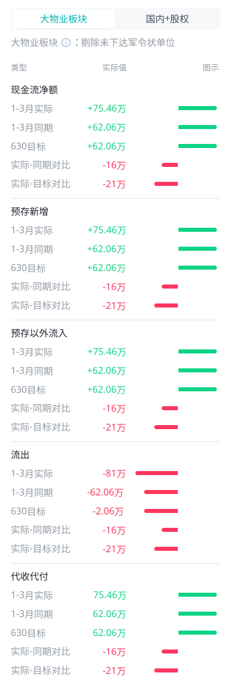
6695:315922 · 343 × 282
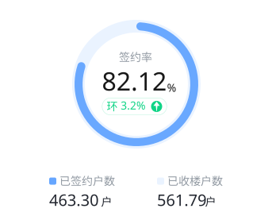
6695:315962 · 343 × 321
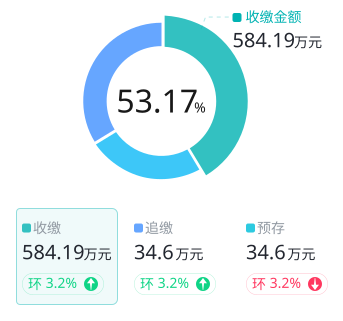
6695:316042 · 343 × 346
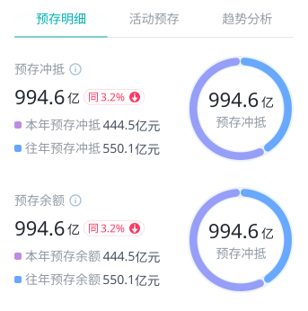
6695:316135 · 343 × 516
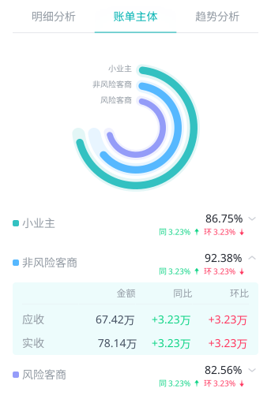
6695:316197 · 343 × 608
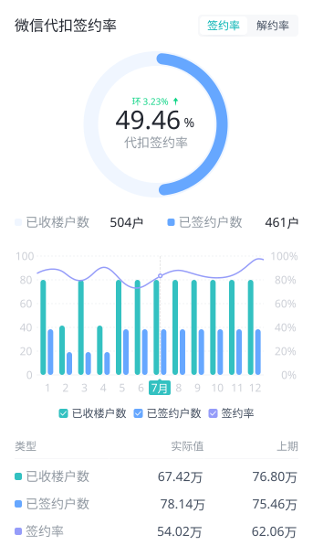
6695:316308 · 343 × 373
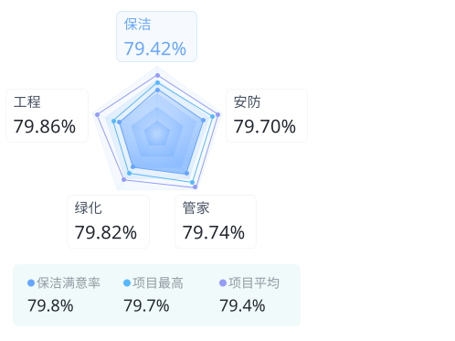
6695:316438 · 329 × 345
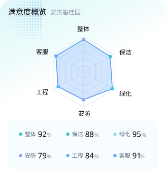
6695:316711 · 343 × 265
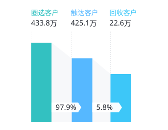
6695:316767 · 311 × 108
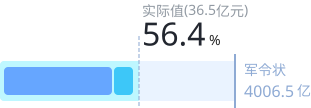
6695:316799 · 329 × 155
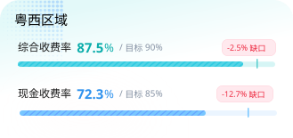
6695:316886 · 311 × 183
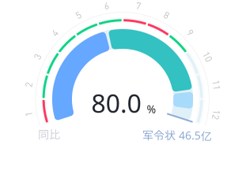
6671:164095 · 343 × 134
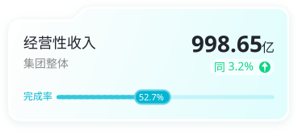
6671:164148 · 343 × 110
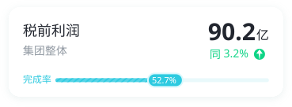
6671:164196 · 343 × 143
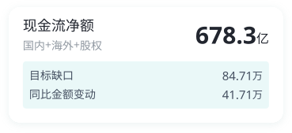